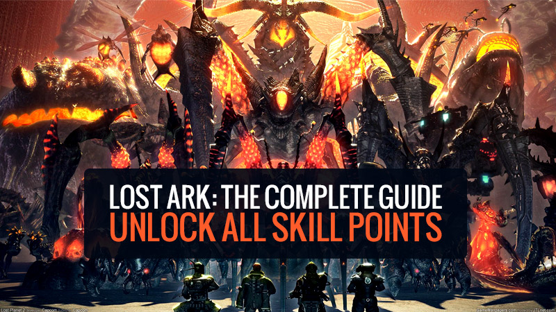
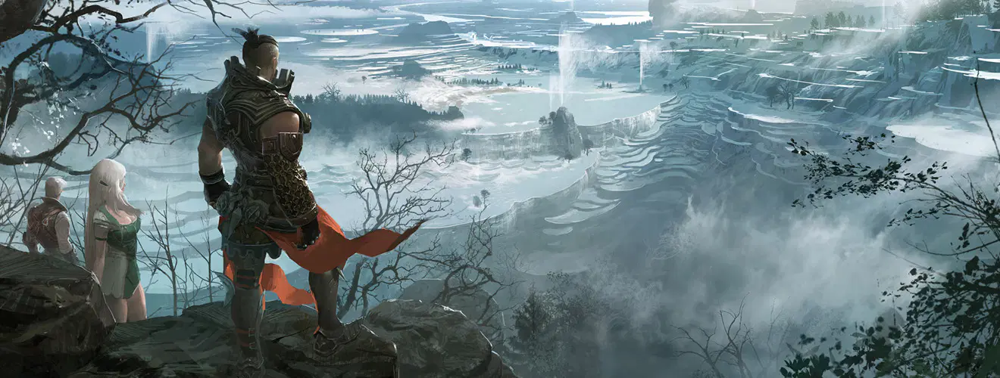
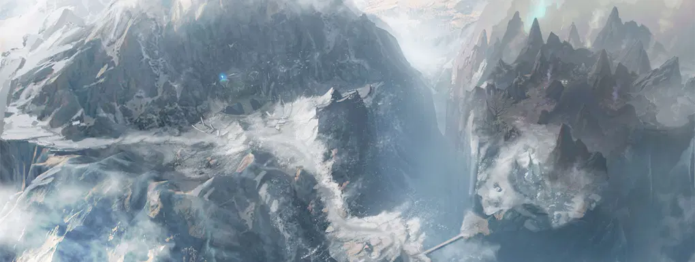
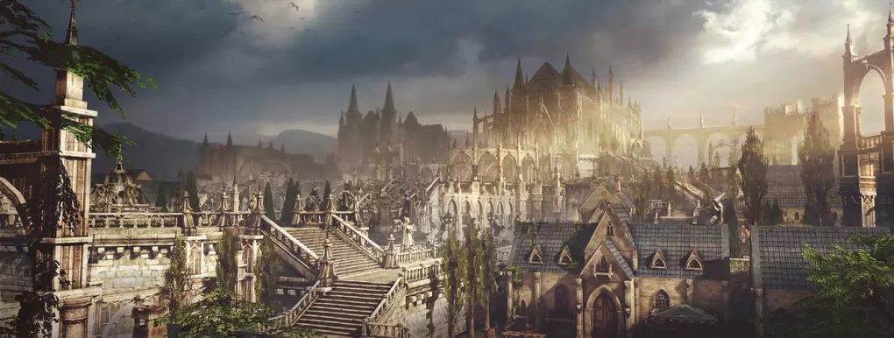

In the Lost Ark game, skills are a topic that players care about a lot! Skill points in Lost Ark allow you to increase your attack energy. The extra skill points a single skill has, the more harm it offers, and in specific increments, it is possible to opt for skill tree tiers. If you are new to the game, verify our guide to skill points to see how they work. Let's see where to visit unlock each of the skill points scattered across the world on the Lost Ark.

You'll find a handful of unique items you'll be able to do to earn far more skill points in Lost Ark, but some approaches are not obtainable until you reach particular continents in the game or reach the endgame. Here's how you can earn skill points:
Together with the Lost Ark January update revealing that we'll be beginning with Tier 3 content, players who want to maximize their character nevertheless have a large amount of work to accomplish. A significant concentration might be unlocking all obtainable Lost Ark skill points to have probably the most out of skills.
Lost Ark: 27 important things beginners should pay attention to!

Just level up from 1 to 50 to have your initial 252 points, and from there, it is all about honing. You'll be able to gather points by way of a wide variety of events, all of which in this section will feature Luterra, Vern, and Shushire. Here's the way to earn the first set of skill points:
| Earn Adventurer's Tomes | +9 Points |
|---|---|
| East Luterra (70%) | + 3 Skill Points |
| North Vern (60%) | +3 Skill Points |
| Shushire (50%) | +3 Skill Points |
| Climb Shadespire Tower | +6 Points |
|---|---|
| Reach Floor 20 | + 3 Skill Points |
| Reach Floor 50 | +3 Skill Points |
| Obtain Collectables | +18 Points |
|---|---|
| Find 20 Island Tokens | +3 Skill Points |
| Find 8 Ignea Tokens | +3 Skill Points |
| Find 4 Giant's Hearts | +3 Skill Points |
| Find 6 Giant's Hearts | +3 Skill Points |
| Complete The Following Quests | +12 Points |
|---|---|
| The Wayward Son (Required finding an Old Pendant) | +3 Skill Points |
| The Stone of Power (Starts with Legendary Blacksmith on Serenity Isle | +3 Skill Points |
| Memories of Luterra (Starts with Thirain) | +3 Skill Points |
| Wondrous Find (Starts at Cadri in Port City Changhun) | +3 Skill Points |
| Leveling | +30 Points |
|---|---|
| Level from 50 to 55 | +30 Skill Points |
| Earn Adventurer's Tomes | +3 Points |
|---|---|
| Rohendel (70%) | +3 Skill Points |
| Complete The Following Quests | +6 Points |
|---|---|
| Return Trip (Starts with Gherdia in Lake Shiverwave, requires completing Tower of Thanks and Repairing the Seal Site 7 times) | +3 Skill Points |

| Climb Shadespire Tower | +6 Points |
|---|---|
| Reach Floor 20 | + 3 Skill Points |
| Reach Floor 50 | +3 Skill Points |
| Obtain Collectables | +6 Points |
|---|---|
| Find 10 Giant's Hearts | + 3 Skill Points |
| Find 12 Giant's Hearts | +3 Skill Points |
| Complete The Following Quests | +9 Points |
|---|---|
| Forest Minuet | +3 Skill Points |
| Find 8 Ignea Tokens | +3 Skill Points |
| Harmony of Heavens | +3 Skill Points |
Note: You need to reach Reputation level 3 with Little Whispering Island. This is done by completing the following Una quests:
| Complete The Following Quests | +6 Points |
|---|---|
| Last Requiem (Starts with Caldor in Kallazar | +3 Skill Points |
| Buried Alive (Starts with Caldor in Kallazar) | +3 Skill Points |

| Leveling | +30 Points |
|---|---|
| Level from 55 to 60 | +30 Skill Points |
| Earn Adventurer's Tomes | +30 Points |
|---|---|
| Punika (80%) | +30 Skill Points |
| Obtain Collectables | +6 Points |
|---|---|
| Find 2 Omnium Stars | + 3 Skill Points |
| Find 6 Omnium Stars | + 3 Skill Points |
| Complete The Following Quests | +3 Points |
|---|---|
| Letter to Papuania (Starts at the hidden object in Nia Village) | +3 Skill Points |
| Climb Shadespire Tower | +3 Points |
|---|---|
| Reach Floor 50 | +3 Skill Points |
| Complete The Following Quests | +3 Points |
|---|---|
|
You need to reach Reputation level 3 with Wisdom Isle. This is done by completing the following Una tasks:
|
+ 3 Skill Points |
That's it. As you can see, it really is pretty an extended grind, using a ton of factors to perform and gather. Unlocking Lost Ark Ability Point is far more of a journey, directly primary to you all over the world. Ensure to love it, and best of luck in-game!
| Mistake | Content |
|---|---|
| 1 |
You'll find two kinds of healing potions that recover a fixed amount of wellness and others that restore a %. When you level from particular quests and in the founder packs chests, you may receive both forms of them. Steer clear of at any expense to use the one that can recover a % since they scale together with your level and any time you will begin performing end game dungeons & raids you are going to need them "since those would be the only ones you may bring with you in those activities". Many people "that won't use this advice" will pay a decent quantity of gold later inside the auction residence to obtain them. |
| 2 |
When you see side quests having a chain symbol, attempt not to skip them because they give a decent quantity of silver and other rewards likeability points. |
| 3 |
Following finishing the East Luttera continent, you might be presented to the travels around the sea. This could not be very clear since it will appear as the primary quest line ended. Don't just wander around because the principal questline will modify the icon color to blue instead of the classical orange. So start off carrying out Blue quests to progress within the story correctly. |
| 4 |
Even though you speedrun, don't rush the Arthetine continent side quests. This is simply because a few of them will unlock the end game options, and some blue quests will send you to discover North Vern exactly where you truly unlock the finished game content material. |
| 5 |
Please don't do the finish game dungeons and raids as quickly as you unlock them. Initially, complete the story within the next continent known as Shushire. This will give you a complete set to complete finish game content material. I speak in regards to the full 302 set. But keep in mind that that is topic to just how much time you may have in between hitting 50 and every day reset "6 AM server time", should you have time for you to do Shushire before each day reset is greater, do so this way you may do a larger chaos dungeon for your every day that day. |
| 6 |
Don't skip each side quests simply because a few of them will unlock far better daily quests with larger rewards. |
| 7 |
Please do not ignore the stronghold but start out investigating new buildings as quickly as possible because it takes a lot of hours to finish every research. Those researches will permit you to unlock new crafting recipes like better potions or consumables for end-game content. |
| 8 |
Speaking of sources, you'll primarily research those are metals & wood. So usually do not ignore life expertise. I know this could be boring. However, the reality is that it is restricted because every time you collect wood or metal or do any other life talent activity, you use precise energy for this activity. This energy requires plenty of time for you to be restored and is account bound. So producing alts won't assist mainly because the life ability energy is spread about them. By the way, it's going to take like 30 min to deplete it, and it is going to take two days to restore it completely. |
| 9 |
If you obtain any crate that permits you to pick a card as opposed to giving it at random, save them and do not open them. You might want to keep them until you miss one specific card from the deck to finish it. |
| 10 |
You will frequently obtain some boxes that will provide you with some specific consumables like bombs. These bargains do a great deal of damage. But it is better to save them for the finished game content instead of wasting them on leveling that may be effortless. |
| 11 |
Attempt to stay away from dying for the reason that once this will likely come about, besides damaging your equipment, you also will should use resurrection feathers in case you don't wish to exit a dungeon or to make use of a triport too far out of your place. Those feathers are difficult to obtain. Even though you can have a great amount of them early, if you waste them, you will need to devote true funds to have more or total a certain % of a region to get more. There are tons of techniques to get them, but in the end game, they're never sufficient. |
| 12 |
Do not be scared to shed each of the durability of one's ship and sink within the ocean. You essentially turn into a ghost ship. You, later on, can dock at any region and repair your ship to recover its durability. Should you must move too far away, this could be handy simply because just becoming a ghost ship and getting to your location as an alternative to repairing it in several instances will expense you significantly less. |
| 13 |
If you start sailing, you will discover some strange island that should ask you for some pirate coins to be unlocked. Please do not waste your revenue on them. They just will let you repair your ship there rather than traveling to the nearest port. But there is an exception exactly where it is best to devote these 150 pirate coins to repair the ship's durability. This occasion is once you execute co-op voyage missions. This is because if you run out of ship durability, you will not be capable of full all of the co-op missions. In any case, as soon as your ship is upgraded to a decent level and you possess a superior HP pool, this becomes significantly less significant. |
| 14 |
Should you obtain particular books known as Engravings, usually do not use them until you might learn with a single you'll need. These books are seriously rare and can be sold later to get a big profit. So retain them till you recognize the one you truly will need. Primarily, you can find yourself promoting the one you collect to other players making use of auction home, and then using the gold you get to get the books your character desires. The idea of Engravings is a complex one in particular, and we want a separate guide only for it. |
| 15 |
Never commit all of the gold you've. You will need Lost Ark gold to add your things inside the auction house to sell them and make far more gold. So retain normally 100-1000 gold as savings for listing items sold to other players. Remember that the costs you spend to list are offered you back if the item is not sold, although it is paid only if you truly handle to sell it. |
| 16 |
In each location, there's so-known as Adventurer's Tome. Please don't ignore it. Due to the fact completing every 10%, you can redeem a special reward, and in the event you manage to get 70%, you get a token. For every token you gather, you obtain unique rewards. Essentially the most critical of with will be the potions that improve your talent points permanently. This is also an issue for all of the collectibles, so if you have time, attempt to do the completionist route to get the best out of your character in the finished game. |
| 17 |
Do not stop right here as soon as you unlock the first mount. You can get free-of-charge mounts faster than starting a single by finishing a specific % of adventurer's tome in specific locations. These mounts have a charge capacity that can make you walk more rapidly for a couple of seconds, permitting you to travel quicker. Also, by using the space bar, it is possible to do a leap or jump that also functions as a enhance. |
| 18 |
You don't require to possess a founder pack or spend dollars in the shop to acquire your 1st pet and mount. Just progress within the story, and in less than 30 min you will have each free. Bear in mind that the pet will also gather the loot for you to assist you quite a bit. |
| 19 |
A purple mark appears on the bottom side of the screen, which implies that you unlocked a tutorial quest. These quests teach you how to work new mechanics, and you also get decent rewards by finishing them. |
| 20 |
Those who will locate any Grudge, Sharp Blunt, and Cursed Doll Engravings books. Please consider that these are the most valuable around simply because they are the most effective to have and generally mandatory to perform the hardest difficult end game content. So should you locate any, also you need to have a lot of gold bears in mind that those might be the most highly-priced things you might be capable of selling in auction residence. When in case you strategy to complete difficult core end game content material, consider that those three engravings would be the will have to have done to their terrific modifiers that should massively enhance your dps in unique at level 3. |
| 21 |
Do not underestimate the Auction Property. All the end-game gear & resources you are going to loot is sellable. This indicates that you can sell it to other individuals using this AH system when you never want a certain gear. This may enable you to obtain gold. This also will assist others in getting the gear they want. At the same time, via AH, it is possible to invest your gold to take from other folks what you could need. That is, in all probability, probably the essential element if you try to acquire the right accessories, engravings you're missing, or uncover much better quality gear generally. So you will not need to save as much gold you can. But try to possess a balance between the resources you need and the ones you have. |
| 22 |
You'll notice that you have two levels, blue and purple, on your bottom experience bar. Well, maintain an eye on the purple level. Because each time you may level up, you can unlock permanent boots for all the characters in your account. These want to be claimed manually for each account level. Click on the Account icon, then decide on "Mission Information" to complete so. This may open a tab where it is possible to claim the permanent rewards. After you unlock almost everything:
Once this occurs on the top bar, you'll have the capability to move for the subsequent tier of rewards by clicking around the blue line above the min level. Then when you claim all of the tiers, you could visit the following page working with the arrows around the appropriate side of the tab. |
| 23 |
Do not ignore the collections. This is because they give you essentially most of the account XP needed to unlock all of the account-bound bonuses described in the previous point. In exceptional, the mokoko seeds give you 180 XP points every. Mokokos are, in truth, the quicker and less difficult technique to level up the account quickly. Once you use distinct guides, you'll be able to discover around. There are lots of internet websites that can enable you to use the completionist route. |
| 24 |
After unlocking your 1st mount, you will ask yourself if there is a button to summon it. The bad news is, nope, there isn't. But this will not imply that the only solution will be to open your mount menu choose the mount, and click ride. Do not do this. Alternatively, click and hold around the mount icon and drag it for the Hotbar near above the consumables. This way, you'll be able to bind it as an example towards the number 9. This may let you summon your favored mount without having opened the mounts menu at all. |
| 25 |
Do not be afraid to use your talent points to attempt out how to perform certain tripods. You can normally revert the transform by clicking the minus button close to the capacity. This is free of charge and can be performed anytime you would like. |
| 26 |
Right after you finish East Luttera and begin to travel around the sea, you'll move to other continents. But the problem you'll face is that you cannot make use of the reports to acquire back for the prior continents employing rapid travel. Effectively you still can navigate back working with your ship, but my tips would be not to do so. Actually, in the port location, you can come across an NPC that, for those who will speak to will move you to the currently found continent by paying a little quantity of silver. Bear in mind that traveling by yourself not simply will take more time but, in addition, will use some silver also because you'll need to repair your boat in the finish on the travel. |
| 27 |
You can find much more tricks, but I have a memory hole right after writing all this down xD. So if I have a lot more to share or try to remember what I forgot to add, or other men and women will share their know-how, I'll modify this list. |
Conclusion:
The above is the whole content of this article, I hope players can get a useful guide in Lost Ark through here. Help players have a deeper understanding of the full content of skill points, and prevent players from making more similar mistakes! Finally, expect you to have the best gaming experience in the game. Of course, when you encounter difficulties in the game, you can also come here at any time, the Losarkgold website will provide you with the greatest help!
Related: Lost Ark All Classes Definitive Guide, PVP Tier Guide, PVE Tier Guide in 2022!

Lost Ark is a very popular and surprising large-scale action RPG, and you can explore many unique elements in the game! PVE and PVP mode is the game's unique features that attract players. In this guide, we will explore the game's 2022 PVP class tier list!

In this guide, we have collected answers to the technical and other questions before starting Lost Ark.
A course guide to let new players understand and master key cores in the game. This guide will include Lost Ark games, each class of Pros and Cons, and Main Skill Points in PVE & PVP Different modes, engravings, stat priority, stats and combos & tips.